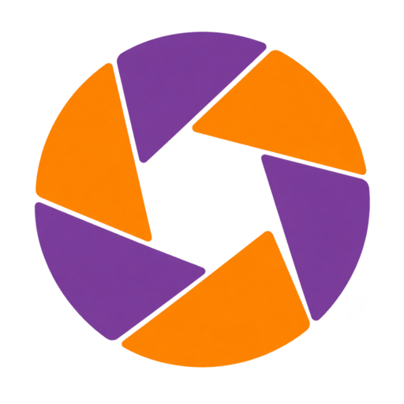

T1Lavender well
Off
On
Light purple fill, inset edge. Quiet but unmistakably pressed.

NeuroQP ApertureComponent study / 01Compare one component at a time. Each option can be mixed with the others. All selected states are shown permanently for discussion.
Both tools, off and on. A darker upper edge and inset shadow make the selected state feel pressed into the toolbar.
Light purple fill, inset edge. Quiet but unmistakably pressed.
Recessed gray, purple glyph, small orange state indicator.
Strongest state contrast. The icon drops into a dark purple recess.
Orange marks selection; purple is reserved for the surrounding controls.
Square marks for binary settings. Each sample shows the checked and unchecked appearance.
Highest contrast with a simple white check.
Matches the recessed toggle, with a dark purple check.
Orange fill and a dark check; keeps purple for tools and fields.
Same value, three field treatments. Open-menu samples show how selection would be highlighted.
A shallow bevel separates the field from its panel.
A pale purple recess puts the selected value inside the panel.
Least visual weight. Suitable when compactness matters most.
Purple carries the display range. Orange is an alternative handle accent, not an image-data color.
Simple and light, with the value aligned on the right.
More tactile. A small vertical grip suits a dense scientific toolbar.
The warm handle stands out against the purple range.
Two treatments per panel. These are component previews, not separate application themes. All contents are static.
P1 · Tinted title strip, inset slider tracks.
P2 · Plain title, fine tracks, orange handles.
M1 · Full-width fields, preview on its own row.
M2 · Preview beside the fields, tighter grouping.